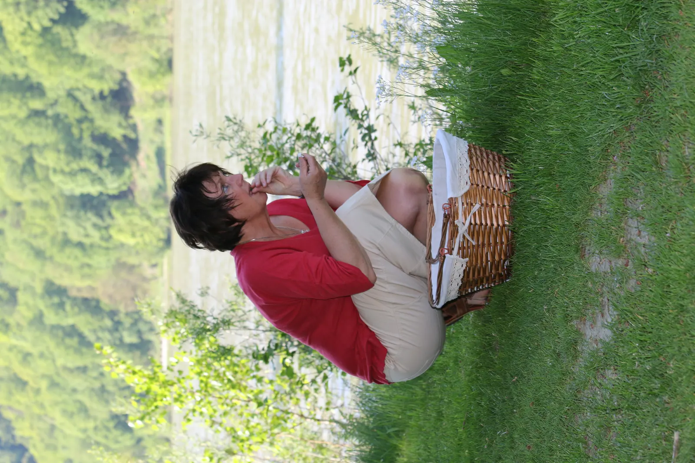

Was erhält uns gesund?
„Die wirksamste Medizin ist die natürliche Heilkraft,— Hippokrates
die im Inneren eines jeden von uns liegt."

Mein Weg zur natürlichen Heilkunde
In einer Zeit, in der wir weniger eine Gesundheits- als vielmehr eine Krankheitskultur haben, möchte ich Menschen ermutigen, aus dem tiefen Wissen der traditionellen Heilkunde zu schöpfen — und die natürliche Heilkraft zu entdecken, die in jedem von uns schlummert.
Warum
Salutogenese?
Salutogenese — vom lateinischen salus (Gesundheit) und griechischen genesis (Entstehung) — fragt nicht „Was macht uns krank?", sondern: Was erhält uns gesund?
Dieser Ansatz richtet den Blick auf Ressourcen, Stärken und Schutzfaktoren — und macht sie nutzbar. Im Kontext des 21. Jahrhunderts verbindet er modernes Wissen mit dem erprobten Schatz traditioneller europäischer Medizin.
„Gesundheit ist nicht alles,
aber ohne Gesundheit ist alles nichts." — Arthur Schopenhauer
Traditionen, die
bis heute wirken
Hl. Hildegard von Bingen
Benediktinerin, Ärztin und Mystikerin — ihr ganzheitliches Heilwissen aus Kräutern, Ernährung und Spiritualität ist bis heute lebendig und wissenschaftlich anerkannt.
Sebastian Kneipp
Pfarrer und Naturheilkundler aus dem Allgäu. Seine fünf Säulen — Wasser, Bewegung, Ernährung, Heilpflanzen und Lebensordnung — sind die Grundlage einer zeitlosen Gesundheitslehre.
KHM der Brüder Grimm
Märchen sind mehr als Geschichten für Kinder. In Symbolen, Mythen und Archetypen verbirgt sich uraltes Heilwissen — nutzbar im sozialtherapeutischen Rollenspiel.
Aus Freyas Zaubergarten —
Vortrag & Workshop über Heilpflanzen
und ihre mythologischen Wurzeln
Kurse, Workshops
& Seminare
Alle Angebote richten sich an Menschen, die ihre Gesundheit aktiv gestalten und das Wissen der traditionellen Heilkunde in ihren Alltag integrieren möchten.
ART, PK und MFT
Autonome Regulationstherapie (ART), Psycho-Kinesiologie (PK) und Mentalfeld-Therapie (MFT) — ganzheitliche Methoden zur Regulation von Körper, Geist und Seele nach Dr. Dietrich Klinghardt.
Salutogenese — Einführung & Vertiefung
Was hält uns gesund? Theorie und Praxis des salutogenetischen Denkens — für Einzelpersonen und Gruppen.
Traditionelle Europäische Medizin (TEM)
Altes Heilwissen neu entdecken — Kräuter, Rhythmus und Naturheilkunde im 21. Jahrhundert.
Aus Freyas Zaubergarten
Heilpflanzen und ihre mythologischen Wurzeln — ein Streifzug durch germanische Kräuterkunde und Symbolik.
Sozialtherapeutisches Rollenspiel
Märchen, Symbole und Mythen als therapeutisches Werkzeug — heilsame Begegnung in der Gruppe.
Hildegard-Heilkunde & Kneipp-Methode
Zwei Säulen der traditionellen Naturheilkunde — praktisch und alltagsnah vermittelt.
Entspannung & Stressbewältigung
Praktische Techniken zur Stärkung der inneren Ressourcen — für mehr Ruhe und Ausgeglichenheit im Alltag.
Ich freue mich
von Ihnen zu hören
Alle Angebote sind unverbindlich anfragbar. Schreiben Sie mir einfach eine E-Mail oder rufen Sie an — ich antworte persönlich.
Verein GsundSamma
menschlich · natürlich · lebensfroh
ZVR-Nummer: 152866 1046